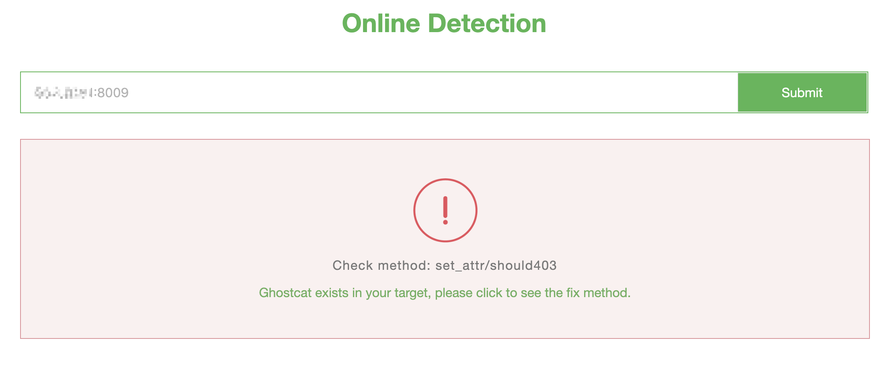

Aapache Tomcat AJP 文件包含漏洞（CVE-2020-1938）¶
Java 是目前 Web 开发中最主流的编程语言，而 Tomcat 是当前最流行的 Java 中间件服务器之一，从初版发布到现在已经有二十多年历史，在世界范围内广泛使用。
Ghostcat（幽灵猫） 是由长亭科技安全研究员发现的存在于 Tomcat 中的安全漏洞，由于 Tomcat AJP 协议设计上存在缺陷，攻击者通过 Tomcat AJP Connector 可以读取或包含 Tomcat 上所有 webapp 目录下的任意文件，例如可以读取 webapp 配置文件或源代码。此外在目标应用有文件上传功能的情况下，配合文件包含的利用还可以达到远程代码执行的危害。
参考链接：
- https://www.chaitin.cn/zh/ghostcat
- https://www.cnvd.org.cn/webinfo/show/5415
- https://mp.weixin.qq.com/s/D1hiKJpah3NhEBLwtTodsg
- https://mp.weixin.qq.com/s/GzqLkwlIQi_i3AVIXn59FQ
漏洞环境¶
执行如下命令启动一个Tomcat 9.0.30：
docker compose up -d
环境启动后，访问http://your-ip:8080即可查看tomcat默认页面，此时通过AJP协议的8009端口亦可访问Tomcat。
漏洞利用¶
利用官方网站在线测试：

利用如下工具均可测试漏洞：